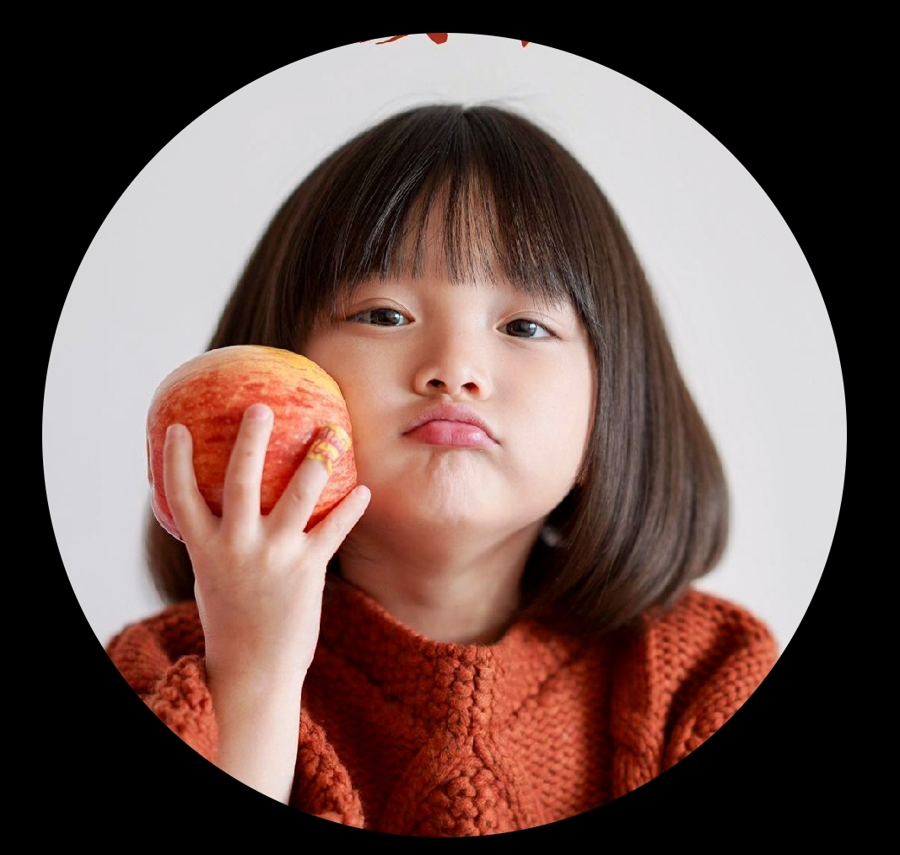
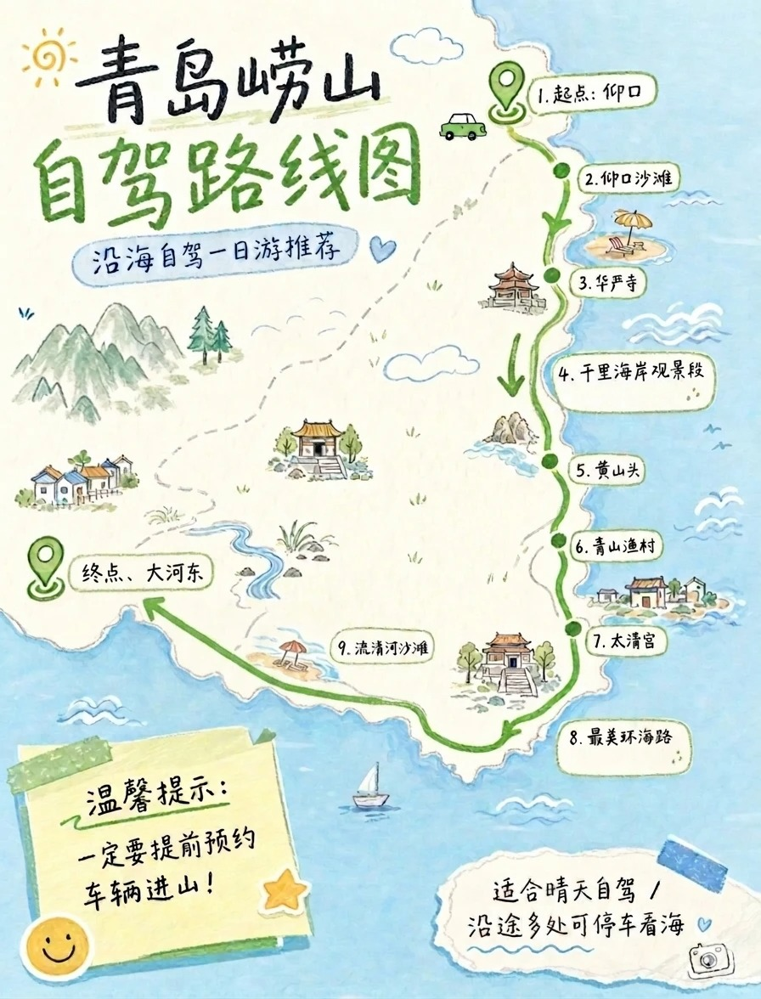

优先把晴天留给山海
崂山自驾、黄岛沿海、小麦岛日落这类需要好天气的，优先安排在大晴天。
崂山/黄岛沿海 → 小麦岛日落 → 老城
和蔼的范思特，欢迎来青岛为你们一家定制 · 2026.08.02 — 08.09
8天7晚，有老人有孩子。每天只排一个重点，下午留够休息时间。爸爸8月5号到齐后，啤酒博物馆和啤酒节再安排上。
先看天气选路线 ↓先做选择
8天时间很宽裕，行程可以根据当天天气和一家人的状态灵活调整。
崂山自驾、黄岛沿海、小麦岛日落这类需要好天气的，优先安排在大晴天。
崂山/黄岛沿海 → 小麦岛日落 → 老城8 天节奏
每天只安排一个重点，下午留足午休和自由时间。老人孩子都能舒服跟上。
连夜开车到青岛，入住五四广场附近酒店。下午好好休息，睡够了晚上出门。7:45左右到五四广场或奥帆中心看灯光秀，情人坝、三浴都行，也可以买船票坐船看。灯光秀到9点多。
⚠️ 看灯光秀不建议开车，人多停车难。
上午开车到栈桥广场停车场，逛栈桥。然后步行到天主教堂（圣弥额尔大教堂），可以进去看看。中午在中山路附近找个馆子吃饭。下午选一个：信号山或小鱼山（老人小孩爬一个就行）。不想爬山的话，在中山路漫画街逛逛，墙上彩绘很适合拍照。
⚠️ 开车注意规划路线，避开拥堵路段。
上午带孩子去极地海洋公园（孩子肯定喜欢）。中午到小麦岛附近吃，推荐食悦89或船歌鱼水饺。中午太晒不建议去海边，回酒店午休或找个咖啡馆待着。下午3点以后去雕塑园、海之恋公园走走，傍晚到小麦岛散散步。晚上简单吃，明天爸爸到了再好好搓一顿。
爸爸到了！上午去海军博物馆（已预约，紧挨着栈桥），逛2小时左右。中午在附近找个馆子吃。下午去啤酒博物馆（爸爸点名要去），逛完大概1.5小时。如果还有体力，可以顺路去八大关开车兜一圈。
🍽️ 晚上去埠西市场啤酒大排档或东海香大锅蒸海鲜，给爸爸接风洗尘！
⚠️ 海军博物馆已预约好5号的场次，按预约时间到就行。
看昨天体力决定：
A 八大关慢游（推荐）：上午去八大关，参观花石楼，沿太平角自驾到三浴，找间咖啡馆坐一下午。晚上看灯光秀、台东夜市或营口路啤酒屋三选一。
B 崂山一日（有劲就去）：提前预约进山，仰口自驾或太清宫坐摆渡车都行。坐摆渡车时坐靠海一侧，游览完去流清沙滩或沙子口沙滩散步拍照。
上午退房，自驾去黄岛（约30分钟过隧道），入住金沙滩附近酒店。下午去金沙滩海水浴场洗海澡（下午四五点水温刚好）。孩子如果想去水上乐园，也可以去融创水上乐园玩半天。傍晚去啤酒节——爸爸最期待的晚上！老人孩子累了就先回酒店休息。
全天自由选择：
A 🎢 融创水上乐园：孩子肯定喜欢，室内水上项目多，一家人能玩一整天。
B 🦁 小珠山野生动物园：在山上的动物园，动物种类多，带孩子去能看个够。
C 🚗 自驾漫游黄岛：按笔记里的黄岛路线，打卡电影博物馆、珊瑚贝桥、星海滩（粉色船）、红树林、城市阳台，一路沿海走。
上午在黄岛轻松收尾：金沙滩再逛一圈，或去融创茂买点特产伴手礼。中午整理行李退房，下午从黄岛直接出发返程回家。
带孩子玩
雕塑园附近的礁石区很适合带孩子赶海，可以挖挖小螃蟹，趣味性强。带上小桶和小铲子，玩一玩很开心。
建议下午四五点以后下水，那时候水温刚好、太阳也没那么晒。一定要选正规海水浴场，比如石老人海水浴场或金沙滩海水浴场，安全有保障。
如果孩子喜欢玩水，在黄岛的时候还可以去融创水上乐园，室内水上项目多，适合一家人玩一天。
灯光秀攻略
灯光秀每晚7:45开始，持续到9点多。不建议开车去，人多停车困难。住在五四广场附近走都走得到。
崂山路线

按笔记线路走，自驾体验山海风光，原路返回。提前预约进山。
自驾到大河东游客中心，坐摆渡车进太清宫。坐车时坐在靠海一侧，一路欣赏山海美景。游览结束后去流清沙滩或沙子口沙滩散步拍照。
两条都是全天线路。旺季车多，出发前以景区当日通知为准。
推荐餐馆
想吃青岛特色大锅蒸海鲜，可以优先安排。
青岛特色鲅鱼水饺，老少皆宜。
当地人常去的家常菜馆，口味正宗。
海鲜品质好，适合家庭聚餐。
逛埠西市场的时候顺便吃，氛围好。
适合晚上去喝一杯，吃点小菜。
逛小麦岛前后可以去吃，本地口碑不错。
住哪里
香港中路一带，推荐丽晶酒店、德宝湾维景、国康海情等。预订前电话确认车位和收费。
方便去啤酒节、洗海澡和最后一天返程。
拥堵、停车难、价格高，自驾家庭找车位很消耗体验。
提前准备
确认酒店停车是否免费、有固定车位
预约海军博物馆
极地海洋公园提前购票
啤酒博物馆提前买票
崂山预约进山